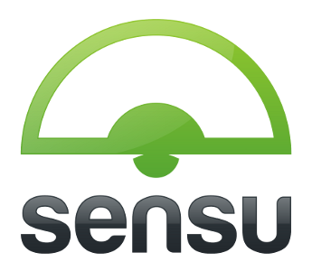

Introduction to Sensu

"Sensu intends to provide an open framework for building comprehensive monitoring solutions, without imposing restrictions or being overly opinionated." Sensu is an open source project that is watched over by Sean Porter and the team at Heavy Water Ops.
Why Sensu?
There are lots of tools in the monitoring space.
So why pick Sensu? Because those SaaS solutions have external dependencies on publishing agent data to them.Sensu can run on your network, keeping your data to yourself, live behind a firewall, and not rack up monthly charges to the SaaS provider. Plus, you can run it all locally on a laptop for testing and validation.
Installing Sensu
Sensu is a Ruby app/gem. It runs on Linux and Windows. It has a dependency on RabbitMQ and Redis for the server components. As such, there is a Chef cookbook or Puppet module to install Sensu and get all dependencies installed as well.
Alternatively, you can just use a Docker container with Sensu installed, like arcus/sensu.
Extending Sensu
What makes Jenkins great?
What also makes Sensu great?
THE PLUGINS! - or more specifically - the plugins.
What is even better? Sensu has been developed from the start to use all the Nagios monitors you've probably got laying around. So don't waste the effort it took to develop them. Just use them on a nicer platform!
Workout
We are going to complete the following actions with Sensu
- Get in the
sensudirectory of our app andvagrant upour trusty VM - Start up a Sensu server using a Docker container.
sudo docker run -d -p 8090:8080 -p 4567:4567 arcus/sensu - Install the Sensu package on the VM (which is running Ubuntu) so it will become a Sensu Agent.
- Enable and start the Agent as a service on the VM.
- Start up Jenkins on the VM, same as how you did before.
- Get the
check-jenkins.rbfrom the Jenkins plugins for Sensu - Install it as a Sensu Check on the VM
- View the Sensu Dashboard
- Stop Jenkins
ctrl-cand watch the Sensu Dashboard again